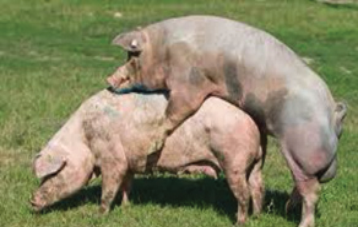
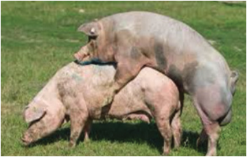
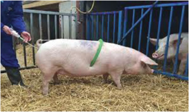

Agriculture for Secondary Schools
Reproduction performance in pig production is influenced by many factors,
including the boar-to-sow/gilt ratio, mating duration, and the breeding system
employed. Natural mating (Figure 7.9 (a)) requires careful management of boars
to avoid overuse, while Artificial Insemination (AI) (Figure 7.9 (b)) offers several
advantages in terms of genetic improvement, disease control, and efficiency.
However, the system requires skilled personnel, semen availability, and AI facilities.
Figure 7.9 (a): Natural mating
Figure 7.9: (b)) Artificial insemination
Activity 7.10
1. Visit any nearby demonstration farms, agricultural institutes/research centres,
AI centres and or use video clips, internet search/ library to learn on:
(a) artificial Insemination;
(b) natural mating practices;
(c) flushing; and
(d) steaming-up.
2. Prepare a report in your portfolio.
Exercise 7.5
1. Give the mating ratio for commercial pigs.
2. In a tabular form, differentiate between natural mating and artificial
insemination.
3. Briefly explain the meaning and importance of the following practices in pig
production:
(a) Flushing; and
(b) steaming-up.
4. What are the effects of a pregnant sow farrowing in a non-farrowing pen?
125
Student’s Book Form Two